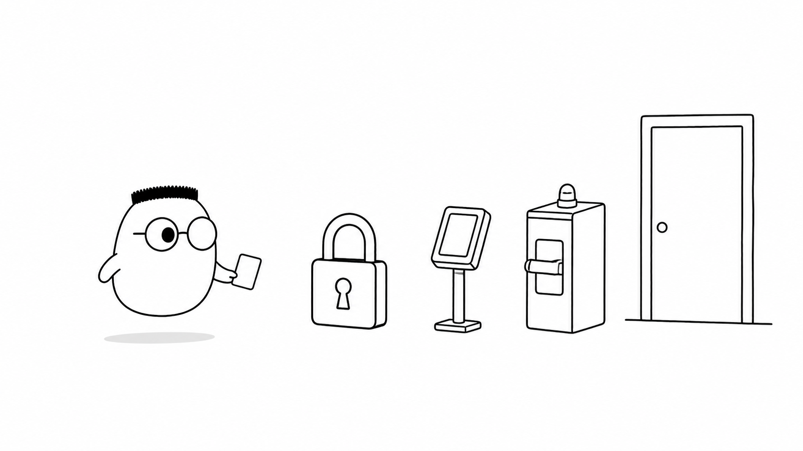
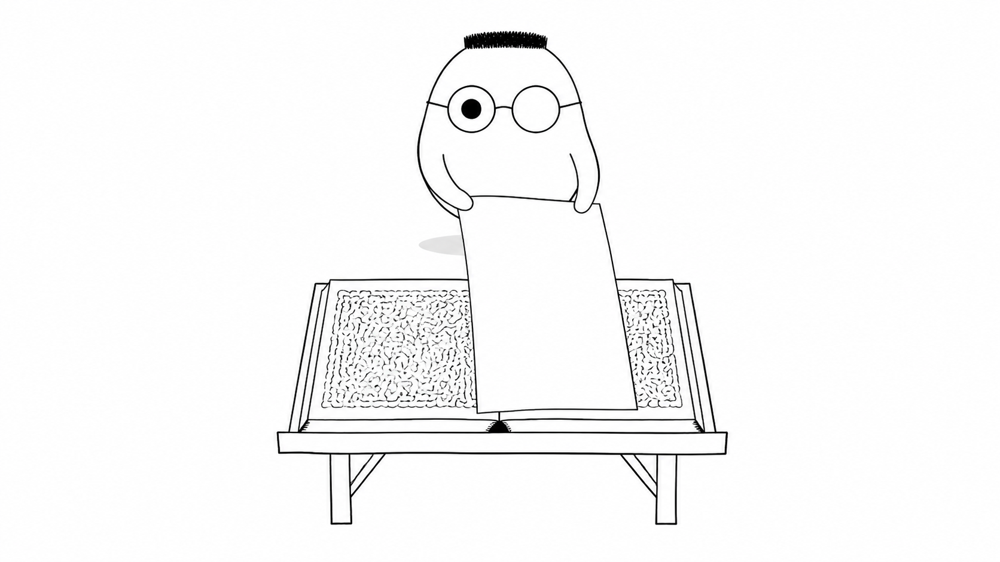
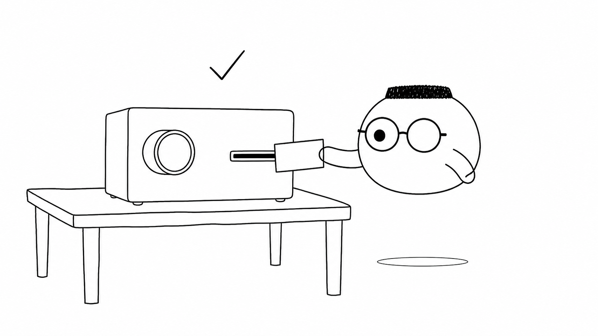

Masalah sehari-hari
Sebuah aplikasi bisa terlihat rapi tetapi tetap punya celah. Pencuri tidak perlu merusak seluruh gedung jika satu pintu samping lupa dikunci.
Analogi Kuka
Kuka berdiri di depan gedung dengan tiga pemeriksaan. Gembok memeriksa pintu, pembaca kartu memeriksa tamu, dan penjaga mesin mengawasi ruangan di dalam.
Setiap tamu membawa permintaan tertulis. Penjaga tidak langsung percaya pada tulisan itu, karena sebuah catatan bisa berisi permintaan biasa atau perintah untuk mengambil alih gedung.
Peta keamanan gedung
Request adalah tamu yang datang, input adalah catatan yang dibawa, dan lapisan keamanan adalah pemeriksaan yang harus dilewati sebelum data boleh disentuh.
Ilustrasi

Keamanan bukan satu gembok besar. Ia adalah kebiasaan memeriksa setiap jalan masuk sebelum data dibuka.
Penjelasan konsep
Pola pikir keamanan dimulai dari pertanyaan pencuri: pintu mana yang paling mudah dicoba, input mana yang paling mudah dipercaya, dan apa yang terjadi jika satu pemeriksaan dilewati?
Penyimpanan kata sandi harus memperlakukan buku catatan sebagai tempat yang bisa dicuri. Kata sandi tidak pernah ditulis polos. Server menyimpan hasil olahan yang sulit dibalik, sehingga pencuri tidak langsung mendapat kata sandi asli.

SQL injection terjadi saat catatan tamu dibaca langsung sebagai perintah gudang. Pisahkan data dari perintah, seperti memisahkan formulir tamu dari kunci ruang penyimpanan.

Pertahanan berlapis membuat satu kesalahan tidak langsung membuka seluruh gedung. Jika gembok gagal, pembaca kartu dan penjaga mesin masih punya kesempatan untuk menolak tamu.
Istilah yang cukup dikenali dulu, ketuk untuk membuka:
Command injection
Trik yang sama lewat pintu lain, ketika input tamu dipakai langsung sebagai perintah mesin.
Sesi, cookie, dan flag kritis
Kartu tamu punya tanda keamanan agar hanya boleh lewat jalur yang terkunci.
JWT
Kartu bersegel untuk autentikasi stateless, tetapi segelnya bisa dipalsukan jika kuncinya bocor.
Rate limiting
Jumlah tebakan dibatasi, misalnya lima kali gagal lalu pintu berhenti sebentar.
BOLA dan BFLA
Kartu tamu biasa tidak boleh membuka pintu gudang meski nomor pintunya berhasil ditebak.
XSS
Tamu menempel catatan yang sebenarnya perintah, lalu catatan itu dibaca oleh tamu lain.
CSRF
Orang lain memesan atas nama Anda tanpa Anda tahu.
Salah konfigurasi
Pintu samping lupa dikunci, sehingga jalan masuk yang seharusnya tertutup menjadi terbuka.
OAuth
Pemeriksaan identitas dititipkan kepada penjaga profesional yang memang bertugas memeriksanya.
Internal HTTPS dan TLS
Jalur antar ruangan juga disegel, bukan hanya pintu depan gedung.
Studi kasus insiden
Cerita gedung yang kebobolan membantu kita melihat bahwa pola kesalahannya sering berulang.
Diagram alur
Request maju satu lapis demi satu lapis. Satu lapis boleh menolak, dan hanya request yang lolos semuanya boleh menyentuh data.
Contoh mini
Login: sandi polos -> ditolak Request: password tidak disimpan polos Input: nama=' OR '1'='1 SQL injection -> ditolak Request: input sudah diperiksa Command asing -> ditolak Request bersih -> lolos Respons: 200 OK
Penjaga memeriksa isi kartu sebelum membuka pintu. Sandi polos dan input yang berubah menjadi perintah ditolak, sedangkan request bersih boleh lewat.
Ringkasan
- Pikirkan cara pencuri masuk sebelum memilih cara untuk menjaga gedung.
- Kata sandi tidak boleh disimpan dalam bentuk aslinya.
- Input harus tetap menjadi data, bukan berubah menjadi perintah.
- Satu gembok tidak cukup karena setiap lapisan memberi kesempatan penolakan baru.
- Keamanan yang baik mengurangi dampak saat satu pemeriksaan gagal.
Pertanyaan pemahaman
- Kenapa kata sandi tidak boleh disimpan dalam bentuk aslinya?
- Apa bahaya menempel catatan tamu (input) langsung menjadi perintah (SQL injection)?
- Kenapa satu gembok (satu lapisan keamanan) tidak cukup?
Mau lebih dalam
Versi teknis membahas ringkasan kerentanan dan penetration testing, lalu menunjukkan pola aman yang lebih lengkap.